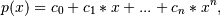
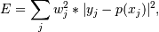
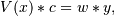

numpy.polynomial.polynomial.polyfit¶
- numpy.polynomial.polynomial.polyfit(x, y, deg, rcond=None, full=False, w=None)[source]¶
Least-squares fit of a polynomial to data.
Return the coefficients of a polynomial of degree deg that is the least squares fit to the data values y given at points x. If y is 1-D the returned coefficients will also be 1-D. If y is 2-D multiple fits are done, one for each column of y, and the resulting coefficients are stored in the corresponding columns of a 2-D return. The fitted polynomial(s) are in the form

where n is deg.
Since numpy version 1.7.0, polyfit also supports NA. If any of the elements of x, y, or w are NA, then the corresponding rows of the linear least squares problem (see Notes) are set to 0. If y is 2-D, then an NA in any row of y invalidates that whole row.
Parameters : x : array_like, shape (M,)
x-coordinates of the M sample (data) points (x[i], y[i]).
y : array_like, shape (M,) or (M, K)
y-coordinates of the sample points. Several sets of sample points sharing the same x-coordinates can be (independently) fit with one call to polyfit by passing in for y a 2-D array that contains one data set per column.
deg : int
Degree of the polynomial(s) to be fit.
rcond : float, optional
Relative condition number of the fit. Singular values smaller than rcond, relative to the largest singular value, will be ignored. The default value is len(x)*eps, where eps is the relative precision of the platform’s float type, about 2e-16 in most cases.
full : bool, optional
Switch determining the nature of the return value. When False (the default) just the coefficients are returned; when True, diagnostic information from the singular value decomposition (used to solve the fit’s matrix equation) is also returned.
w : array_like, shape (M,), optional
Weights. If not None, the contribution of each point (x[i],y[i]) to the fit is weighted by w[i]. Ideally the weights are chosen so that the errors of the products w[i]*y[i] all have the same variance. The default value is None.
New in version 1.5.0.
Returns : coef : ndarray, shape (deg + 1,) or (deg + 1, K)
Polynomial coefficients ordered from low to high. If y was 2-D, the coefficients in column k of coef represent the polynomial fit to the data in y‘s k-th column.
[residuals, rank, singular_values, rcond] : present when full == True
Sum of the squared residuals (SSR) of the least-squares fit; the effective rank of the scaled Vandermonde matrix; its singular values; and the specified value of rcond. For more information, see linalg.lstsq.
Raises : RankWarning
Raised if the matrix in the least-squares fit is rank deficient. The warning is only raised if full == False. The warnings can be turned off by:
>>> import warnings >>> warnings.simplefilter('ignore', RankWarning)
See also
chebfit, legfit, lagfit, hermfit, hermefit
- polyval
- Evaluates a polynomial.
- polyvander
- Vandermonde matrix for powers.
- linalg.lstsq
- Computes a least-squares fit from the matrix.
- scipy.interpolate.UnivariateSpline
- Computes spline fits.
Notes
The solution is the coefficients of the polynomial p that minimizes the sum of the weighted squared errors

where the
 are the weights. This problem is solved by
setting up the (typically) over-determined matrix equation:
are the weights. This problem is solved by
setting up the (typically) over-determined matrix equation:
where V is the weighted pseudo Vandermonde matrix of x, c are the coefficients to be solved for, w are the weights, and y are the observed values. This equation is then solved using the singular value decomposition of V.
If some of the singular values of V are so small that they are neglected (and full == False), a RankWarning will be raised. This means that the coefficient values may be poorly determined. Fitting to a lower order polynomial will usually get rid of the warning (but may not be what you want, of course; if you have independent reason(s) for choosing the degree which isn’t working, you may have to: a) reconsider those reasons, and/or b) reconsider the quality of your data). The rcond parameter can also be set to a value smaller than its default, but the resulting fit may be spurious and have large contributions from roundoff error.
Polynomial fits using double precision tend to “fail” at about (polynomial) degree 20. Fits using Chebyshev or Legendre series are generally better conditioned, but much can still depend on the distribution of the sample points and the smoothness of the data. If the quality of the fit is inadequate, splines may be a good alternative.
Examples
>>> from numpy import polynomial as P >>> x = np.linspace(-1,1,51) # x "data": [-1, -0.96, ..., 0.96, 1] >>> y = x**3 - x + np.random.randn(len(x)) # x^3 - x + N(0,1) "noise" >>> c, stats = P.polyfit(x,y,3,full=True) >>> c # c[0], c[2] should be approx. 0, c[1] approx. -1, c[3] approx. 1 array([ 0.01909725, -1.30598256, -0.00577963, 1.02644286]) >>> stats # note the large SSR, explaining the rather poor results [array([ 38.06116253]), 4, array([ 1.38446749, 1.32119158, 0.50443316, 0.28853036]), 1.1324274851176597e-014]
Same thing without the added noise
>>> y = x**3 - x >>> c, stats = P.polyfit(x,y,3,full=True) >>> c # c[0], c[2] should be "very close to 0", c[1] ~= -1, c[3] ~= 1 array([ -1.73362882e-17, -1.00000000e+00, -2.67471909e-16, 1.00000000e+00]) >>> stats # note the minuscule SSR [array([ 7.46346754e-31]), 4, array([ 1.38446749, 1.32119158, 0.50443316, 0.28853036]), 1.1324274851176597e-014]